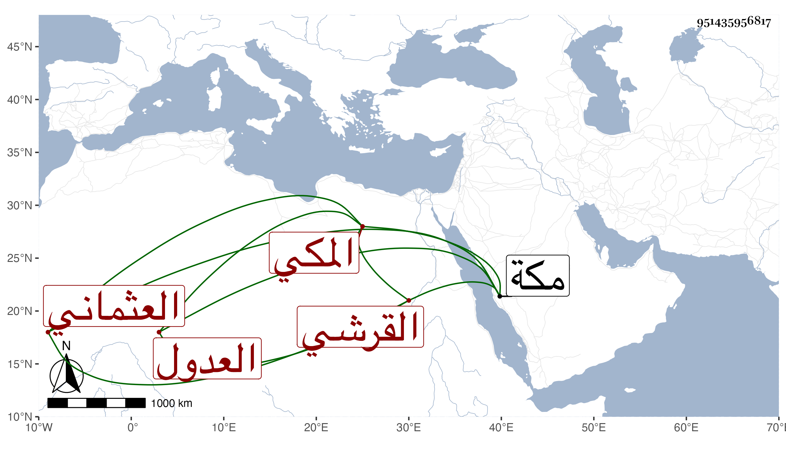

0902Sakhawi.DawLamic.ITO20230111-ara1.EIS1600.951435956817
Biography ID: 951435956817
206
عبد الله بن محمد بن عبد الله بن أبي عبد الله محمد بن الرضي محمد بن أبي بكر عبد الله بن خليل عفيف الدين أبو الطيب القرشي العثماني المكي أحد العدول بباب السلام . ولد بمكة في صفر سنة تسع وثمانمائة ومات بها في جمادى الأولى سنة اثنتين وثمانين .
